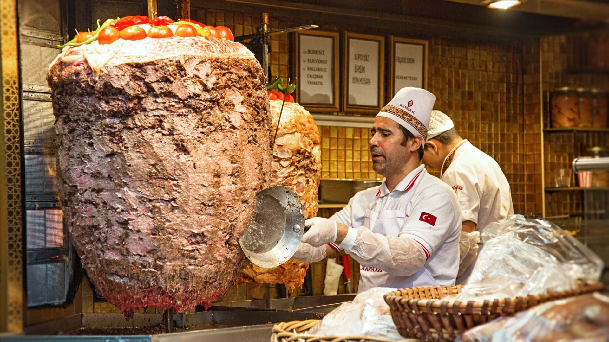

Brofood
Brofood îți oferă o atmosferă modernă și primitoare, ideală pentru orice masă. Serviciul nostru rapid și amabil te asigură că fiecare vizită este o plăcere. Fie că alegi un kebab sau altceva din meniul nostru divers, te așteaptă o experiență memorabilă.

Brofood – kebab, doner , livrare.
La Brofood, excelența în kebaburi este misiunea noastră. Folosim doar ingrediente proaspete și carne bine condimentată pentru a crea kebaburi care te fac să revii. Descoperă varietatea noastră, de la salate la deserturi, toate gândite să completeze kebabul perfect. Vino să vezi de ce suntem deosebiți.